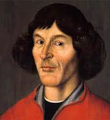
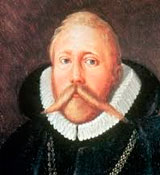

Na Europa, no final da Idade Média, começava a surgir o livre pensamento – sem muitas interferências políticas ou religiosas – textos Árabes e Gregos estavam sendo traduzidos, universidades sendo fundadas, escolas de pensamento se formando. Nesse universo de ideias é que Copérnico apresenta seu modelo do Universo. A sua obra foi publicada em 1543 no livro Sobre a Revolução dos Corpos Celestes. Este modelo é mais simples e próximo da realidade, está baseado no fato de que a Terra gira sobre si mesma e que o seu centro, não é o centro do Universo conforme apregoado até então. Todos os corpos celestes giram em torno do Sol o qual é ou está próximo do centro do Universo. Ptolomeu colocou a Terra no centro do Universo sem girar porque se isso ocorresse ela quebraria. Copérnico argumentava que se isso fosse verdade, a esfera celeste se quebraria também, pois era muito maior que a Terra. A teoria heliocêntrica deu explicações simples e naturais para os fenômenos observados, porém Copérnico não consegue prever as posições dos planetas com precisão, infelizmente ele não consegue uma prova categórica de que a Terra esta em movimento. Além disso, sua teoria foi rebatida e ignorada de forma violenta pela igreja, seu livro foi condenado pela Inquisição e colocado no Index dos livros proibidos. Conheça um pouco de Copérnico:
 Após a morte de Copérnico nasce Tycho Brahe, de família nobre, estuda na Universidade de Copenhagen Línguas e Direito, nesta época presencia um eclipse e muda o rumo de sua vida, passa a estudar matemática e astronomia. Constrói seu próprio observatório e coloca nele os mais sofisticados instrumentos – nessa época ainda não havia sido inventada a luneta -Passa a fazer observações sistemáticas do céu e em novembro de 1572 no dia 11 vê uma estrela que brilhava até durante o dia, era uma supernova. O rei da Dinamarca, Frederico II convida Brahe para ser o matemático e astrônomo de sua corte e dá para ele uma ilha onde constrói um observatório e faz registros das posições dos planetas. Observa um cometa e prova que sua órbita está além da Lua, provando com isso não ser um fenômeno meteorológico como pensavam todos. Para Brahe a Terra era o centro do Universo, assim não aceitou o modelo de Copérnico, mudando-o para que ficasse mais compatível com suas convicções. O modelo de Brahe era uma mistura do modelo de Ptolomeu e de Copérnico. No centro do Universo estava a Terra imóvel O Sol girava ao redor dela e os planetas ao redor do Sol.
 A primeira grande contribuição
para a teoria heliocêntrica foi a descoberta dos satélites de Júpiter, para Galileu pelo menos alguma coisa não girava ao redor da
Terra, como afirmavam os ptolomaicos, estava com isso derrubado o dogma de 14 séculos de que somente um sistema estacionário
poderia ser o centro do Universo. Outra grande contribuição de Galileu foi a descoberta das fases de Vênus, mostrando que as
variações de brilho eram devido a uma órbita ao redor do Sol. Com o seu fervor em defender o heliocentrismo de Copérnico, Galileu
viu-se às voltas com a Inquisição e só não foi condenado em função de ter renegado suas idéias e afirmar que era um grande
bajulador. Foi o primeiro a usar lentes na astronomia.
A primeira grande contribuição
para a teoria heliocêntrica foi a descoberta dos satélites de Júpiter, para Galileu pelo menos alguma coisa não girava ao redor da
Terra, como afirmavam os ptolomaicos, estava com isso derrubado o dogma de 14 séculos de que somente um sistema estacionário
poderia ser o centro do Universo. Outra grande contribuição de Galileu foi a descoberta das fases de Vênus, mostrando que as
variações de brilho eram devido a uma órbita ao redor do Sol. Com o seu fervor em defender o heliocentrismo de Copérnico, Galileu
viu-se às voltas com a Inquisição e só não foi condenado em função de ter renegado suas idéias e afirmar que era um grande
bajulador. Foi o primeiro a usar lentes na astronomia.
 A pretensão inicial de Kepler era ser pastor luterano,
mas na universidade de Tubingen, sob a influência de um professor de matemática e astronomia abandonou a teologia e iniciou os estudos de
astronomia. Este professor ensinou que Ptolomeu estava certo, mas Kepler preferiu o modelo de Copérnico. Ao publicar ysterium Cosmographium
manda cópias a Brahe e Galilei, recebe um convite de Brahe para ser seu assistente em 1600, em Praga. Brahe era ótimo observador, mas não tão
bom teórico, enquanto que Kepler era ótimo teórico e persistente em suas idéias e propósitos. Com a morte de Brahe os dados observados por ele
passaram às mãos de Kepler, e descobre as leis dos movimentos dos planetas e em 1609 publica as duas dessas leis:
1 - Os planetas se movem em trajetórias elípticas, onde o Sol ocupa um dos focos.
2 - A linha reta que une o planeta ao Sol, varre sempre áreas iguais em tempos iguais.
A pretensão inicial de Kepler era ser pastor luterano,
mas na universidade de Tubingen, sob a influência de um professor de matemática e astronomia abandonou a teologia e iniciou os estudos de
astronomia. Este professor ensinou que Ptolomeu estava certo, mas Kepler preferiu o modelo de Copérnico. Ao publicar ysterium Cosmographium
manda cópias a Brahe e Galilei, recebe um convite de Brahe para ser seu assistente em 1600, em Praga. Brahe era ótimo observador, mas não tão
bom teórico, enquanto que Kepler era ótimo teórico e persistente em suas idéias e propósitos. Com a morte de Brahe os dados observados por ele
passaram às mãos de Kepler, e descobre as leis dos movimentos dos planetas e em 1609 publica as duas dessas leis:
1 - Os planetas se movem em trajetórias elípticas, onde o Sol ocupa um dos focos.
2 - A linha reta que une o planeta ao Sol, varre sempre áreas iguais em tempos iguais.
 Se o intervalo de tempo gasto pelo corpo celeste (planeta ou satélite) para ir de A até B for o mesmo para ir de C até D, então as
áreas S1 e S2 são iguais. Com a primeira lei é substituído todos os ciclos epiciclos dos modelos ptolomaicos, copernianos e
tychônico, etc. Já com a segunda mostra-se que os corpos não têm velocidade em módulo, mas sim velocidades maiores quando próximos
do Sol e velocidades menores quando mais afastados do Sol. A Terra, por exemplo, tem as seguintes velocidades:
Se o intervalo de tempo gasto pelo corpo celeste (planeta ou satélite) para ir de A até B for o mesmo para ir de C até D, então as
áreas S1 e S2 são iguais. Com a primeira lei é substituído todos os ciclos epiciclos dos modelos ptolomaicos, copernianos e
tychônico, etc. Já com a segunda mostra-se que os corpos não têm velocidade em módulo, mas sim velocidades maiores quando próximos
do Sol e velocidades menores quando mais afastados do Sol. A Terra, por exemplo, tem as seguintes velocidades:
Máxima no Periélio: 30,2 km/s
Mínima no Afélio : 29,3 km/s
Com estas leis tanto a Terra como o Sol são tirados do centro do universo. Mesmo com a publicação dessas leis, Galileu foi
condenado em 1633, não havia evidências de que a terra girava e a Bíblia possui passagens que diz que a Terra não gira.
Dez anos mais tarde Kepler publica sua terceira lei, conhecida como Lei dos Períodos: A razão entre o quadrado do período pelo
cubo da distância média do planeta ao Sol é uma constante.
A expressão matemática para essa lei é : As leis de Kepler não se aplicam apenas aos planetas que giram ao redor do Sol, mas a quaisquer grupos de planetas que girem ao
redor de seu Sol, ou a qualquer grupo de satélites que girem ao redor de seu planeta. As leis de Kepler podem ser deduzidas a
partir da equação
As leis de Kepler não se aplicam apenas aos planetas que giram ao redor do Sol, mas a quaisquer grupos de planetas que girem ao
redor de seu Sol, ou a qualquer grupo de satélites que girem ao redor de seu planeta. As leis de Kepler podem ser deduzidas a
partir da equação 
 Isaac Newton nasce em 1642 e inicia sua carreira
em Cambridge bacharelando-se em 1665. Dentre as suas colaborações para a humanidade, a partir de 1666 começa a fazer conjeturas sobre a
gravidade estendendo-se até a Lua e a partir da terceira lei de Kepler deduz que a força que mantém os planetas em suas órbitas deve
variar inversamente com os quadrados de suas distâncias aos centros. Estudando o movimento dos corpos, Galileu Galilei (1564-1642)
descobriu através de experimentos que um corpo que se move, continuará em movimento a menos que uma força seja aplicada e que o force
a parar. Galileu argumentou que o movimento é tão natural quanto o repouso, isto é, um corpo que está em repouso permanece em repouso
a menos que seja submetido a uma força que o faça mover-se. Se um objeto já está se movimentando, ele continuará em movimento a menos
que seja submetido a uma força que o faça parar. Galileu descobriu os satélites de Júpiter e comunicou seus dados a Kepler, que os
observou pessoalmente. Os satélites obedecem às Três Leis de Kepler, porém com um valor da constante k diferente na 3 Lei.
Sessenta anos depois, o inglês Isaac Newton (1643-1727) foi quem deu uma explicação completa ao movimento e à forma como as forças atuam.
A escrição está contida nas suas três leis:
Isaac Newton nasce em 1642 e inicia sua carreira
em Cambridge bacharelando-se em 1665. Dentre as suas colaborações para a humanidade, a partir de 1666 começa a fazer conjeturas sobre a
gravidade estendendo-se até a Lua e a partir da terceira lei de Kepler deduz que a força que mantém os planetas em suas órbitas deve
variar inversamente com os quadrados de suas distâncias aos centros. Estudando o movimento dos corpos, Galileu Galilei (1564-1642)
descobriu através de experimentos que um corpo que se move, continuará em movimento a menos que uma força seja aplicada e que o force
a parar. Galileu argumentou que o movimento é tão natural quanto o repouso, isto é, um corpo que está em repouso permanece em repouso
a menos que seja submetido a uma força que o faça mover-se. Se um objeto já está se movimentando, ele continuará em movimento a menos
que seja submetido a uma força que o faça parar. Galileu descobriu os satélites de Júpiter e comunicou seus dados a Kepler, que os
observou pessoalmente. Os satélites obedecem às Três Leis de Kepler, porém com um valor da constante k diferente na 3 Lei.
Sessenta anos depois, o inglês Isaac Newton (1643-1727) foi quem deu uma explicação completa ao movimento e à forma como as forças atuam.
A escrição está contida nas suas três leis:
Inércia: foi elaborada a partir de Galileu, embora ele não tenha realmente chegado ao conceito de inércia. Com ausência de forças externas, um objeto em repouso permanece em repouso, e um objeto em movimento permanece em movimento, ficando em movimento retilíneo e com velocidade constante. Esta propriedade do corpo que resiste à mudança chama-se inércia. A medida da inércia de um corpo é seu momentum. Newton definiu o momentum de um objeto como sendo proporcional à sua velocidade. A constante de proporcionalidade, que é a sua propriedade que resiste à mudança, é a sua massa: p = mv = constante, se F = 0
Segunda Lei:Lei da Força relaciona a mudança de velocidade do objeto com a força aplicada sobre ele. A força líquida aplicada a um objeto é igual à massa do objeto vezes a aceleração causada ao corpo por esta força. A aceleração é na mesma direção da força.
Terceira Lei:Ação e Reação estabelecem que se o objeto exerce uma força sobre outro objeto, este outro exerce uma força igual e contrária. Newton pôde explicar o movimento dos planetas em torno do Sol, assumindo a hipótese de uma força dirigida ao Sol, que produz uma aceleração que força a velocidade do planeta a mudar de direção continuamente. Como foi que Newton descobriu a Lei da Gravitação Universal? Considerando o movimento da Lua em torno da Terra e as leis de Kepler.